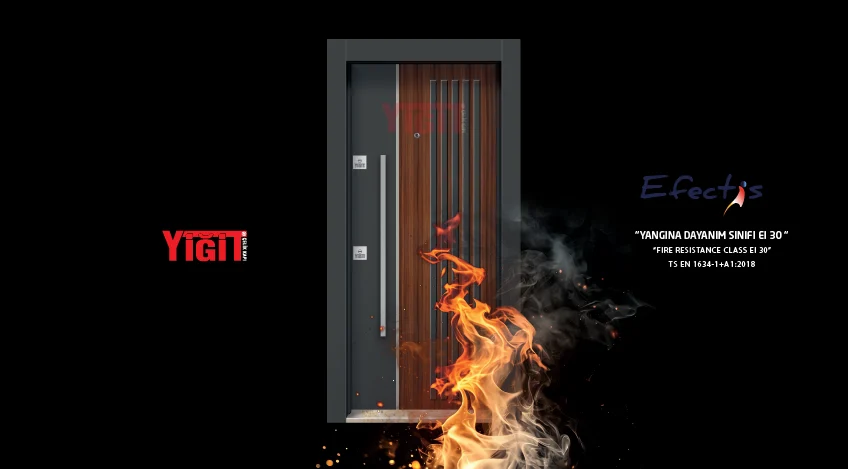

Yangın, binaların karşılaşabileceği en tehlikeli durumlardan biri. İstatistiklere göre Türkiye’de her yıl binlerce yangın vakası yaşanıyor ve can kayıplarının önemli bir kısmı, yangının yayılmasını engelleyemeyen yetersiz güvenlik önlemlerinden kaynaklanıyor. İşte tam bu noktada yangına dayanıklı çelik kapılar hayati önem taşıyor. Peki, bu kapılar normal kapılardan nasıl farklı? Hangi binalarda zorunlu? Gelin, detaylıca inceleyelim.
Yangına Dayanıklı Kapı Nedir?
Yangına dayanıklı kapılar, belirli bir süre boyunca yangının ve dumanın yayılmasını engelleyen özel üretim kapılardır. Bu kapılar, yüksek sıcaklıklara dayanıklı malzemelerden üretilir ve test edilerek sertifikalandırılır.
Normal bir çelik kapı ile yangın kapısı arasındaki temel fark, yangın kapısının belirli standartlara göre test edilmiş ve onaylanmış olmasıdır. Bu testler, kapının ne kadar süre yangına dayanabileceğini, dumanı ne kadar engelleyebildiğini ve yapısal bütünlüğünü ne kadar koruduğunu ölçer.
Yangın Kapısı Standartları ve Sınıflandırma
Türkiye’de yangın kapıları, TS EN 1634-1 standardına göre test edilir ve sınıflandırılır. Yangın direnci süresine göre farklı sınıflar bulunur:
İletişim
Projeniz için fiyat teklifi alın
Yangın kapısı projeleriniz için TSE belgeli üretim ve montaj desteği hakkında bilgi alın.
E (Etanchéité): Alevlerin ve sıcak gazların geçişini engelleme
I (Isolation): Isı yalıtımı sağlama
Yangın Kapısının Temel Özellikleri
1. Özel Malzeme Kullanımı
Yangın kapıları, normal kapılardan farklı olarak özel malzemelerle üretilir:
- Çelik Gövde: Minimum 1,5 mm kalınlığında galvanizli çelik
- Yangın Yalıtım Malzemesi: Mineral yün, vermikülit veya özel yangın yalıtım panelleri
- Özel Conta Sistemi: Isıyla şişen termik contalar
- Yangın Dirençli Boya: Yüksek sıcaklıklara dayanıklı özel boya
2. Otomatik Kapanma Sistemi
Yangın kapılarının en önemli özelliklerinden biri, otomatik kapanma sistemidir. Yangın anında kapının açık kalması, yangının yayılmasına neden olabilir. Bu nedenle:
- Hidrolik veya yaylı kapı kapatıcı zorunludur
- Kapı her zaman kendiliğinden kapanmalıdır
- Manyetik tutucular yangın alarmıyla bağlantılı olabilir
- Kapanma hızı ayarlanabilir olmalıdır
3. Duman Sızdırmazlık
Yangınlarda can kaybının %70’i dumandan kaynaklanır. Yangın kapıları, duman geçişini engelleyen özel conta sistemlerine sahiptir:
- Soğuk contalar: Normal şartlarda hava sızdırmazlık
- Termik contalar: Isıyla şişerek duman geçişini engelleme
- Eşik contası: Alt kısımdan duman girişini önleme
4. Anti-Panik Donanım
Acil çıkış kapılarında kullanılan yangın kapıları, panik anında kolayca açılabilmelidir:
- Panik bar sistemi
- İçeriden tek hareketle açılma
- Dışarıdan kilitli, içeriden serbest
- Acil durum aydınlatması entegrasyonu
Yangın Kapısı Hangi Binalarda Zorunludur?
Yangın Yönetmeliği ve İlgili Mevzuata göre, belirli binalarda yangın kapısı kullanımı zorunludur:
Zorunlu Kullanım Alanları
| Bina Tipi | Zorunluluk | Minimum Süre |
|---|---|---|
| 5+ Katlı Apartmanlar | Merdiven boşluğu girişi | EI 30 |
| Alışveriş Merkezleri | Yangın bölme kapıları | EI 60 |
| Hastaneler | Tüm bölme kapıları | EI 60-90 |
| Okullar | Merdiven ve koridor kapıları | EI 30-60 |
| Oteller | Yangın bölme kapıları | EI 60 |
| Fabrikalar | Üretim alanı girişleri | EI 60-120 |
| Kapalı Otoparklar | Bina girişi | EI 60 |
Önerilen Kullanım Alanları
Zorunlu olmasa da, güvenlik açısından yangın kapısı kullanılması önerilen alanlar:
- Lüks villalar ve konutlar
- Bodrum katlar
- Kazan daireleri
- Elektrik panosu odaları
- Arşiv ve depo alanları
Yangın Kapısı Test ve Sertifikasyon Süreci
Bir kapının yangın kapısı olarak kullanılabilmesi için, akredite laboratuvarlarda test edilmesi ve sertifikalandırılması gerekir:
Test Aşamaları
- Yangın Direnci Testi: Kapı, belirtilen süre boyunca yüksek sıcaklığa maruz bırakılır
- Duman Sızdırmazlık Testi: Duman geçişi ölçülür
- Isı Transferi Testi: Kapının arka yüzeyindeki sıcaklık artışı kontrol edilir
- Yapısal Bütünlük Testi: Kapının deforme olup olmadığı incelenir
- Otomatik Kapanma Testi: Kapı kapatıcının çalışması test edilir
Gerekli Belgeler
- TS EN 1634-1 Test Raporu
- CE Uygunluk Belgesi
- Yangın Performans Sertifikası
- Üretici Firma Kalite Belgesi
- Montaj ve Kullanım Kılavuzu
Yangın Kapısı Seçerken Dikkat Edilmesi Gerekenler
1. Doğru Yangın Direnci Süresi
Binanızın kullanım amacına ve mevzuat gerekliliklerine göre doğru EI sınıfını seçin. Daha uzun süre her zaman daha iyi değildir – gereksiz maliyet artışına neden olabilir.
2. Sertifika Kontrolü
Mutlaka test raporu ve sertifikaları isteyin. Sahte veya geçersiz sertifikalar ciddi yasal sorunlara yol açabilir.
3. Montaj Kalitesi
Yangın kapısının performansı, doğru montaja bağlıdır. Yetkili ve deneyimli ekipler tarafından monte edilmelidir.
4. Bakım ve Kontrol
Yangın kapıları düzenli olarak kontrol edilmeli ve bakımı yapılmalıdır. Yılda en az 2 kez profesyonel kontrol önerilir.
Yangın Kapısı Fiyatları ve Maliyet Analizi
Yangın kapısı fiyatları, normal çelik kapılara göre %30-100 daha yüksek olabilir. Fiyatı etkileyen faktörler:
- Yangın Direnci Süresi: EI 30 < EI 60 < EI 90 < EI 120
- Boyut: Büyük kapılar daha pahalı
- Özel Özellikler: Cam detay, özel tasarım, akıllı kilit
- Marka ve Kalite: Yerli veya ithal üretim
- Sertifikasyon: Uluslararası sertifikalar ek maliyet
Maliyet-Fayda Analizi:
Yangın kapısı bir yatırımdır. Can güvenliği ve yasal zorunluluklar düşünüldüğünde, maliyeti göz ardı edilebilir. Ayrıca sigorta primlerinde indirim sağlayabilir.
Montaj ve Kurulum Süreci
Yangın kapısı montajı, normal kapı montajından daha hassas bir süreçtir:
Montaj Öncesi
- Açıklık ölçülerinin kontrolü
- Duvar kalınlığı ve malzemesi kontrolü
- Elektrik bağlantıları planlaması (varsa)
- Yangın alarm sistemi entegrasyonu
Montaj Sırasında
- Kasanın düzgün ve sağlam montajı
- Conta sistemlerinin eksiksiz yerleştirilmesi
- Kapı kapatıcının doğru ayarlanması
- Tüm boşlukların yangın dirençli malzemeyle doldurulması
Montaj Sonrası
- Açılma-kapanma testleri
- Conta kontrolü
- Kapı kapatıcı ayarı
- Montaj belgelerinin düzenlenmesi
Bakım ve Periyodik Kontroller
Yangın kapılarının düzenli bakımı, yangın anında düzgün çalışması için kritik önem taşır:
Aylık Kontroller (Kullanıcı Tarafından)
- Kapının tam kapanıp kapanmadığı
- Kapı kapatıcının çalışması
- Kilit mekanizmasının durumu
- Görünür hasarların kontrolü
6 Aylık Profesyonel Bakım
- Menteşe kontrolü ve yağlama
- Kapı kapatıcı ayarı
- Conta sistemlerinin kontrolü
- Kilit mekanizması bakımı
Yıllık Detaylı Kontrol
- Tüm mekanizmaların kontrolü
- Yangın direnci kontrolü (görsel)
- Sertifika ve belgelerin güncellenmesi
- Bakım raporunun düzenlenmesi
Yasal Sorumluluklar ve Yaptırımlar
Yangın güvenliği konusunda yasal sorumluluklar ciddi yaptırımlar içerir:
Bina Sahiplerinin Sorumlulukları
- Mevzuata uygun yangın kapısı kullanımı
- Düzenli bakım ve kontrol
- Sertifikaların saklanması
- Yangın güvenlik planının hazırlanması
Yaptırımlar
Yangın güvenlik önlemlerinin alınmaması durumunda:
- İdari para cezaları
- İşyeri kapatma
- Cezai sorumluluk (yangın durumunda)
- Sigorta tazminatının ödenmemesi
Sık Sorulan Sorular
Normal çelik kapıyı yangın kapısı olarak kullanabilir miyim?
Hayır. Yangın kapısı, test edilmiş ve sertifikalandırılmış olmalıdır. Normal çelik kapı yangın kapısı yerine geçmez.
Yangın kapısı ne kadar süre dayanır?
Sınıfına göre 30, 60, 90 veya 120 dakika yangına dayanır. Bu süre, test koşullarında ölçülmüştür.
Yangın kapısı açık tutulabilir mi?
Hayır. Yangın kapıları her zaman kapalı olmalıdır. Açık tutulması gerekiyorsa, yangın alarmıyla bağlantılı manyetik tutucu kullanılmalıdır.
Yangın kapısı sertifikası ne kadar süre geçerlidir?
Sertifika süresiz geçerlidir, ancak kapının düzenli bakımı ve kontrolü yapılmalıdır.
Eski binada yangın kapısı zorunlu mu?
Mevcut yapılarda, tadilat veya kullanım değişikliği durumunda yangın güvenlik önlemleri güncellenmeli ve yangın kapısı takılmalıdır.
Sonuç: Yangın Güvenliği Ertelenebilir Bir Konu Değil
Yangına dayanıklı çelik kapılar, sadece yasal bir zorunluluk değil, can güvenliği için kritik bir önlemdir. Doğru seçim, kaliteli montaj ve düzenli bakımla, yangın anında hayat kurtarıcı rol oynarlar.
Unutmayın: Yangın kapısı, yangın çıkmadan önce alınması gereken bir önlemdir. Yangın çıktıktan sonra pişmanlık fayda etmez.
Yiğit Çelik Kapı olarak, 2003’ten beri yangına dayanıklı çelik kapılar üretiyoruz. TSE belgeli üretimimiz, akredite laboratuvar testlerimiz ve deneyimli ekibimizle, binanızın yangın güvenliğini sağlıyoruz.
Yiğit Çelik Kapı
Yangına dayanıklı çelik kapılar
TSE belgeli yangın kapısı modellerimiz ve teknik destek için ekibimizle iletişime geçin.